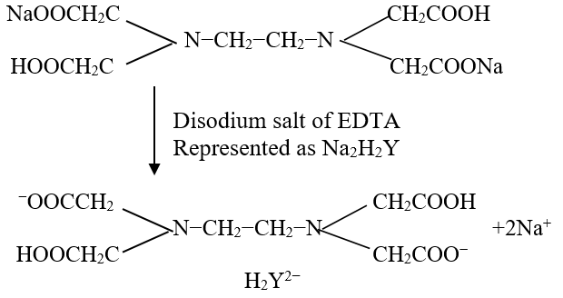
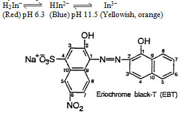
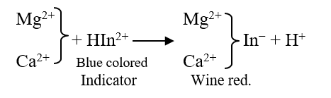
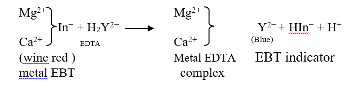
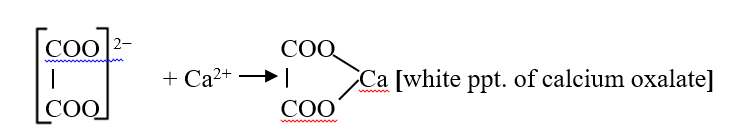
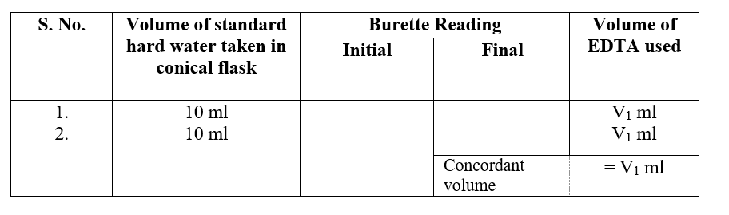
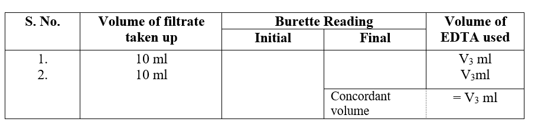
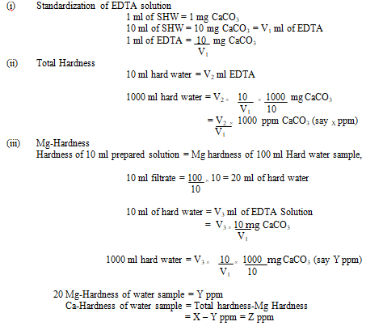
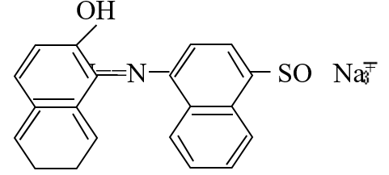
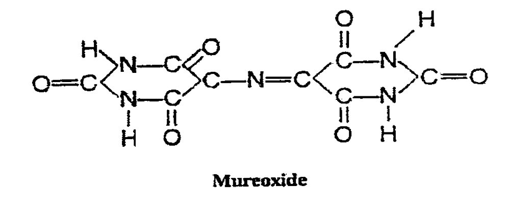

Aim:
To determine Ca2+ and Mg2+ hardness of given water sample separately.
Requirements:
Conical flask, burette, pipette, measuring-flask, standard hard water (SHW), EDTA solution, Eriochrome black-T indicator, NH4OH−NH4Cl buffer solution (pH = 10).
Theory:
Hardness is that property of water which restricts its lather formation with soap solution. Hardness is due to the presence of calcium, magnesium and other heavy metal salts in water.
Determination of Hardness: Hardness of given water sample can be measured by,
- O. Hehner’s method
- Soap Titration method
- EDTA method.
Out of these three methods, EDTA is most accurate and versatile method. In the hard water sample total hardness can be determined by estimating Ca2+ and Mg2+ present in water by titrating it against standard disodium salt of EDTA in the presence of an indicator eriochrome black-T at a pH of 10. Permanent hardness can be determined by precipitating the temporary hardness by prolonged boiling followed by titration with EDTA solution. The difference in the titra values corresponds to temporary hardness of water sample.
Disodium salt of ethylenediamine tetra acetic acid (EDTA) ionises in aqueous solution to give 2Na+ and a strong chelating agent.

When Eriochrome Black-T dye is added to the hard water at a pH 10 (maintained by adding NH4OH−NH4Cl buffer) it gives wine red colored unstable complex with Ca2+ and Mg2+ of the sample water. This wine red colored complex solution is titrated against standard EDTA solution, the color of the complex changes from wine red to blue showing the end point.
Erochrome black-T indicator is a complex organic compound (sodium-1-(1-hydroxy-2naphthylazo)-6-nitro-2-naphtol-4-sulphonote). It has two ionisable, phenolic hydrogen atoms and for simplicity its is represented as Na+H2In-

EBT forms complex with metal ions which are generally wine red as in H2In−. For metal ion detection, it is necessary to adjust the pH on the basic side so that blue form of species HIn2− predominates in the absence of metal ion. Until the equivalence point in a titration, the indicator complexes of excess metal ions so that the solution is wine red. With the first slight excess of EDTA, the solution turns blue as a consequence of the reaction (buffered at pH 10). In the pH range 8-10, the blue form of indicator,

HIn2− gives a wine red complex with Mg2+ and Ca2+. Now if EDTA (H2Y2−) is added to such a solution, Mg2+ and Ca2+ preferentially forms complex with EDTA (since the metal EDTA complex is more stable than the metal-EBT complex) and librates the free indicator HIn2− which is blue in showing the end point.

To calculate Mg2+ hardness of the water separately, Ca2+ in the hard water sample is precipitated as calcium oxalate by adding calcium precipitating buffer solution having, (NH4) 2C2O4 + NH4OH,

This white precipitate is filtered and Mg2+ in the filterate is titrated against standard EDTA solution using Eriochrome black-T indicator.
Procedure
Prepare standard hard water (SHW) by dissolving 1 gm of CaCO3 in 1000 ml of water.
Take 10 ml of standard hard water in a conical flask. Add 3 ml of buffer solution and 2-3 drops of eriochrome black-T indicator the color of the solution should be wine red. Titrate it against standard EDTA solution till color changes from wine red color to blue at the end point. Take at least two concordant readings. Let the volume of EDTA used is V1 ml.
Titrate similarly unknown hard water (10 ml) and find out the volume of EDTA used. Let the volume of EDTA solution used is V2 ml.
Pipette out 100 ml of sample water in a 250 ml beaker. Add 25 ml of calcium precipitating buffer solution while constantly stirring the mixture with a glass rod. Keep as such for about 30 minutes for settling of white precipitates formed. Filter the solution through a dry Whatman−42 filter paper in a dry flask. Pipette out 10 ml of filtrate in a conical flask. Add 5 ml of buffer (NH4OH + NH4CI) and 3-4 drops of EBT indicator. Titrate against EDTA till wine red colour changes to pure blue.
Observations:
For standard hard water:

For unknown hard water sample:
For Mg2+ hardness:

Calculations:

Results:
Total hardness of given water sample:
Mg- Hardness of given water Sample = Y ppm.
Ca- Hardness of given water Sample = Z ppm.
Precaution:
- Distilled water should be used.
- The drops of the indicator to be added should be adjusted in a manner to given the accurate end point.
- Always rinse the burette with the solution, which is to be taken in it.
- Remove the air gap if any, from the burette before titrating the solution. Make sure that the nozzle of burette is also filled.
- Never forget to remove the funnel from the burette before noting the readings of the burette and ensure that no drop is hanging from the nozzle of the burette.
- Always read the lower meniscus for all transparent solutions and upper meniscus for coloured solutions.
- To note the burette readings place the eye exactly at the level of the meniscus.
- Never hold the pipette at the bulb.
- Never use the pipette and burette with a broken nozzle.
- Never suck a strong acid or an alkali with the pipette.
- Always keep the lower end of the pipette dipped in the liquid while sucking the liquid.
- Do not blow out the last drop of the solution from the jet end of the pipette into the flask.
- The concentration (strength) of the solution must be calculated up to the fourth place of decimal.
Note:
Mg2+ in the hard water sample can be precipitated as Mg (OH)2 by adding diethyl amine which raises the pH of the solution to about 12.5.
Mg2+ + 2OH--------->Mg (OH)2
Ca2+ can then be titrated with EDTA using calcon indicator, color change from pink to blue marks the end point.

Sodium1–(2-hydroxy-1-naphthylazo)-2-naphtho-4-sulphate
Mg2+ ions may also be precipitated as Mg(OH)2 by adding NaOH solution and using mureoxide indicator. Ca2+ in the hard water sample is precipitated out as calcium mureoxide. This solution is titrated against EDTA; colour change from red to violet indicates the end point.
